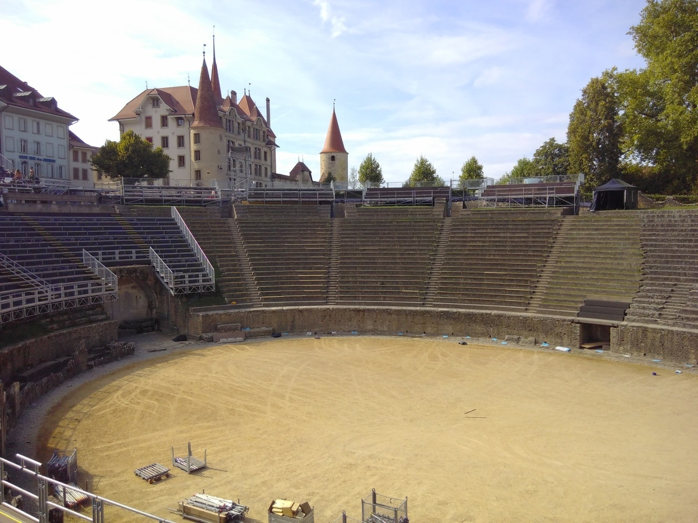

Das Cigognier-Heiligtum und der Kaiserkult
Avenches ist einer der wenigen Orte in der Schweiz, an dem die Spuren römischer Besiedlung offen zu Tage treten. Neben der römischen Stadtmauer sind insbesondere das Amphitheater, das Theater, die Bäder und Überreste verschiedener Tempel, besonders des Cigognier-Tempels, sichtbar. Will mensch etwas über die Geschichte der Schweiz in römischer Zeit erfahren, sind die Funde in Avenches ein wichtiger Bezugspunkt.
Als Avenches Aventicum war – ein kurzer Abriss der Geschichte des Ortes in der Frühzeit
Wie so oft ist nicht mit Sicherheit zu sagen, wann der Ort zum ersten Mal besiedelt war. Lange wurde angenommen, dass die Helvetier die ersten Siedler waren. Inzwischen ist aber klar, dass es schon in der zweiten Eisenzeit, auch Latènezeit genannt, Besiedlung gab, da Gräber und Reste von Siedlungen gefunden wurden. Es wird angenommen, dass die Helvetier sich nach ihrer Niederlage gegen das Heer Caesars im Jahr 58 v. Chr. zuerst auf den Bois-de-Châtel zurückzogen und dort in der Form eines oppidums (Befestigung) siedelten. Später, Anfang des ersten nachchristlichen Jahrhunderts, erfolgte die Ansiedlung im heutigen Avenches, wo ausgezeichnete Möglichkeiten des Aufbaus von Handelswegen über die Strassen sowie übers Wasser bestanden. Aventicum wurde so zum Hauptort der römischen civitas helvetiorum (Stadt der Helvetier) und unter Kaiser Vespasian schliesslich zur römischen Kolonie erhoben. Etwa ab diesem Zeitpunkt begannen auch die Bestrebungen, die Stadt nach typisch römischem Schema zu errichten. Merkmal dafür sind besonders augenfällig die sogenannten insulae, die mensch, übertragen auf heute, in etwa als Häuserblock bezeichnen könnte. Seine grosse Blütezeit erreichte Aventicum im 2. und anfangs des 3. Jahrhunderts n. Chr., der Zeit, in der auch die Anbindung an Rom und die Romanisierung der Stadt am grössten waren. Spätestens im 4. Jahrhundert kam es dann, aus bisher nicht geklärten Gründen, zum Niedergang der Stadt. Sie scheint aber dennoch immer besiedelt gewesen zu sein, denn ab dem 5. Jahrhundert ist der Bau von christlichen Kirchen bezeugt und im 6. Jahrhundert war Aventicum Sitz des Bischofs. Dies allerdings nur für kurze Zeit, bevor der Bischofssitz nach Lausanne verlegt wurde.
Das Theater in Avenches. (Bild: Maria Lissek)
Die sakralen Bauten in Aventicum
Die sakrale Landschaft der römischen Stadt bestand aus drei abgrenzbaren Teilen: aus dem Heiligtum En Chaplix, welches ausserhalb der späteren Stadtmauern lag, aus der area sacra des Forums und aus einer Reihe von sakralen Gebäuden, die Morel und Blanc das «quartier religieux occidental» nennen. Hierin befinden sich sämtliche Tempel, die in Avenches heute noch nachweisbar sind. Dieses ‘Quartier’ kann wiederum in zwei Teile aufgeteilt werden: Ein Teil auf dem Hügel, dessen Tempelbauten eher älter sind und aus der zweiten Hälfte des 1. Jahrhunderts stammen und der andere Teil unten auf der Ebene, bestehend aus dem etwa gleichzeitig erbauten Heiligtum ‘Cigognier’ – der Name ist eine Anspielung auf die heute noch stehende ‘Storchensäule’, wo auf der ersten bildlichen Dokumentation im 17. Jahrhundert noch ein Storchennest zu sehen war – und dem Theater, sowie aus dem erst später entstandenen Heiligtum ‘Au Lavoëx’. Das Cigognier-Heiligtum und das Theater sind auf einer Nord-Süd-Achse angeordnet, so dass mensch von den Rängen des Theaters direkten Blick auf das Geschehen im Hof des Heiligtums hatte. Obwohl beide Gebäude Ende des 1. Jahrhunderts gleichzeitig erbaut wurden, weisen sie unterschiedliche Architekturen auf: Während das Heiligtum einen dezidiert römischen Baustil hat und grosse Ähnlichkeiten mit dem Forum Pacis des Vespasian in Rom aufweist, findet sich beim Theater der gallisch-römische Baustil und eine weniger einheitliche Architektonik. Heute stehen vom Cigognier-Heiligtum nur noch eine Säule und einige wenige Grundmauern, während beim Theater noch die Bühne und die untersten Ränge der Zuschauertribüne erkennbar sind.
Das Cigognier-Heiligtum und der (Kaiser)Kult
Im Jahr 1939 wurde bei Grabungen im Cigognier-Heiligtum in einem Teil der Kanalisation eine vergoldete Büste gefunden, die den Kaiser Marc Aurel darstellt. Es wird vermutet, dass die Büste erst als Feldzeichen einer römischen Legion, später dann als Standbild für Prozessionen im Kaiserkult verwendet wurde. Aufgrund dieses Fundes, aber auch weil das Heiligtum dezidiert auf das Theater ausgerichtet ist, wo das Volk von weitem mitverfolgen konnte, was bei sakralen Akten im Heiligtum geschah, wird vermutet, dass es in Avenches ein lokales, helvetisches Pantheon gab, welches verehrt wurde. Dazu gehörten der Hauptgott Jupiter wie auch der oder die Kaiser und sogenannte Paredroi (Beisitzer; Helfer eines politischen Funktionsträgers oder einer Gottheit), Götter aus der helvetischen Tradition.
Der Christ Tertullian über den Kaiserkult – dieselbe Zeit, ein anderer Ort
Zu der Zeit, als Aventicum seine Hochblüte erlebte, also um 200 n.Chr.,
schrieb in Karthago der Christ Tertullian, einer der wichtigsten
Zeitzeugen für das frühe Christentum in Nordafrika, über die Verehrung
von Göttern und die Verehrung der Kaiser als Götter. Im Kapitel 28
seines Werkes ‘Apologeticum’ argumentiert er mit spitzer Zunge und
feiner Ironie gegen den Versuch, die Christen dazu zu zwingen, ebenfalls
Götter und Kaiser anzubeten, ihnen als Zeichen der Ehrerbietung gar zu
opfern. Seine Argumentation stützt sich dabei auf zwei Pfeiler: Erstens
sieht Tertullian die Ehrerbietung und die Opferhandlung ihres Sinnes
entleert, wenn derjenige, der sie tut, sich innerlich dagegen sträubt.
Er stellt also in der Wertung einer Handlung die innere Haltung zu
dieser Handlung über deren bloss äusserlichen Vollzug. Sein zweiter
Pfeiler zielt auf eine ähnliche Gegenüberstellung von innerer Haltung
und äusserer Handlung: Er unterstellt jenen, die den Kaiserkult ausüben,
dass sie dies nur tun würden, um sich mit dem mächtigsten Mann im Reich,
dem Kaiser, gut zu stellen. Sie würden gar nicht wirklich an seine
Göttlichkeit glauben, sondern ihm nur schmeicheln wollen.
Von einer solch direkten Auseinandersetzung zwischen Menschen, die den
Vielgötter- und Kaiserkult pflegten, und Christen gibt es für Aventicum
keine Zeugnisse. Irgendwann wird aber der Übergang von der Mischung
zwischen römischem Staatskult und Verehrung der helvetischen Götter hin
zu einer mehrheitlich christlichen Bevölkerung stattgefunden haben
müssen. Vielleicht waren ja gerade die allgemeine Tendenz zur
Verinnerlichung des Religiösen und die Trennung von äusseren Vollzügen
der Grund dafür, dass es bis zum Bau der ersten Kirche im 5. Jahrhundert
keine Zeugnisse über Christen in Avenches gibt.
Sara Egger ist Studentin der Theologie im Master an der Universität Bern.
Weitere Artikel von {{ author.author }} finden Sie hier:
Zur Vertiefung:
- Castella, Daniel / Meylan Krause, Marie-France (Hgg.), Topographie sacrée et rituels. Le cas d’Aventicum, capitale des Helvètes. Actes du colloque international d’Avenches 2-4 novembre 2006 (Antiqua 43), Basel 2008, 40.
- Castella, Daniel (Hg.): Aventicum. Eine römische Hauptstadt, Avenches 2015
- Bridel Philippe: Le Sanctuaire du Cigognier (Cahiers d’archéologie romande, Aventicum III), Lausanne 1981.